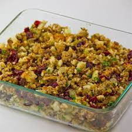

Sausage and Cranberry Stuffing

Description
This Thanksgiving stuffing is fantastic! It is very flavorful and
fresh-tasting. This recipe will stuff a 10-pound turkey
(which serves six) plus extra. I replaced the usual pork sausage
with much healthier turkey sausage.
Other dried fruits may also be used in place of cranberries.
Ingredients
- 1 ½ cups cubed whole wheat bread
- 3 ¾ cups cubed white bread
- 1 pound ground turkey sausage
- 1 cup chopped onion
- ¾ cup chopped celery
- 2 ½ teaspoons dried sage
- 1 ½ teaspoons dried rosemary
- ½ teaspoon dried thyme
- 1 Golden Delicious apple, cored and chopped
- ¾ cup dried cranberries
- ⅓ cup minced fresh parsley
- 1 cooked turkey liver, finely chopped
- ¾ cup turkey stock
- 4 tablespoons unsalted butter, melted
Steps
- Preheat oven to 350 degree F (175 degree C).
Spread the white and whole wheat bread cubes in a single layer
on a large baking sheet. Bake for 5 to 7 minutes in the preheated
oven, or until evenly toasted.
Transfer toasted bread cubes to a large bowl
- In a large skillet, cook the sausage and onions over medium heat,
stirring and breaking up the lumps until evenly browned. Add
the celery, sage, rosemary,
and thyme; cook, stirring, for 2 minutes to blend flavors.
- Pour sausage mixture over bread in bowl. Mix in chopped apple,
dried cranberries, parsley, and liver. Drizzle with turkey stock
and melted butter, and mix lightly.
Allow stuffing to cool completely before loosely stuffing a turkey.
More Info
allrecipes.com